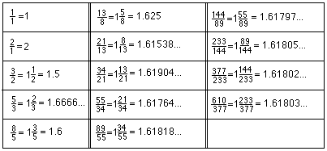
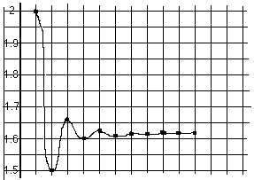

Answers for Chapter 7 Sample Problems
2. A program to get the Fibonacci numbers
- 10 x=1
- 20
PRINT x
- 30 y=1
- 40 PRINT y
- 50 s=x+y
- 60 PRINT s
- 70
x=y
- 80 y=s
- 90 GOTO 50
3. The
Fibonacci ratios: 
The graph of the Fibonacci ratios:

The number this infinite sequence approaches is The Golden Mean or
The Divine Proportion. It is an irrational number and the
positive solution
of the quadratic equation x2-x-1=0, which is (1+Sqrt(5))/2, about 1.618034.
The Greek letter 'phi' (see below for the symbol) is sometimes used to
represent this number.
2. The regular pentagon

Back to Ch. 7 problems
To order Don's
materials
To choose sample problems from
other chapters
Mathman home